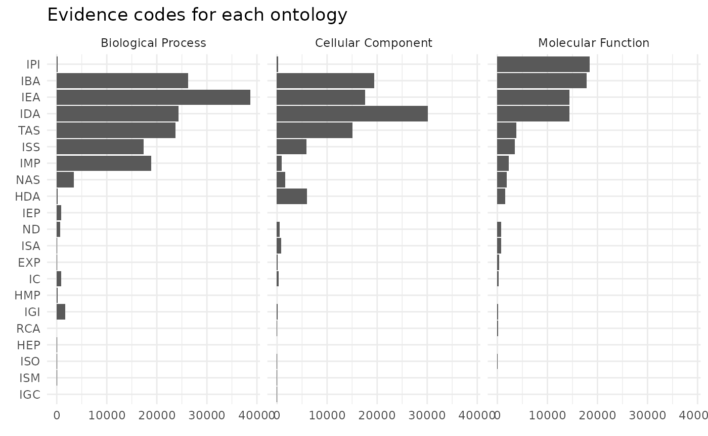
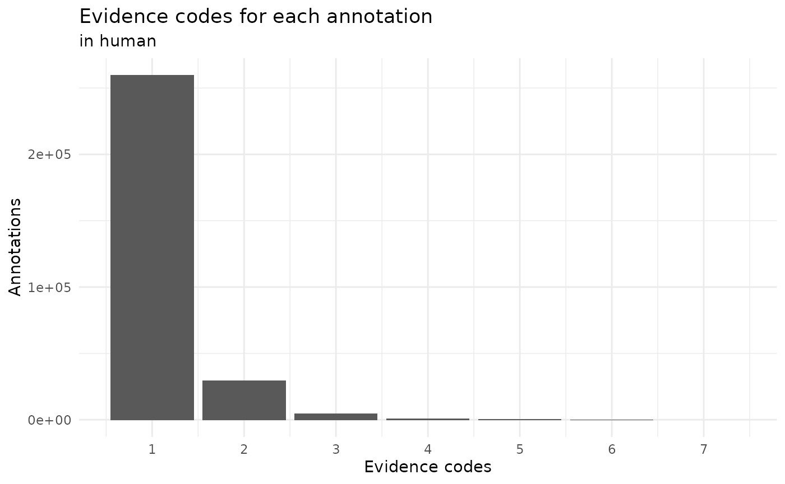
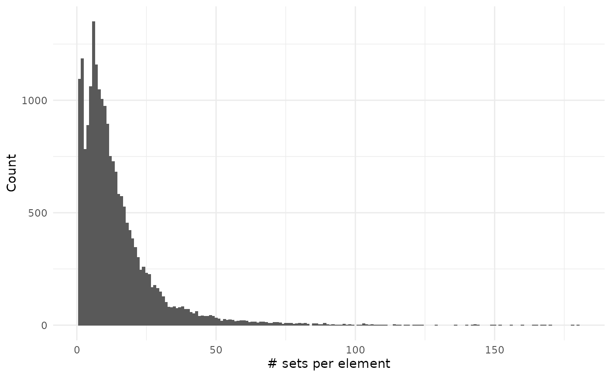
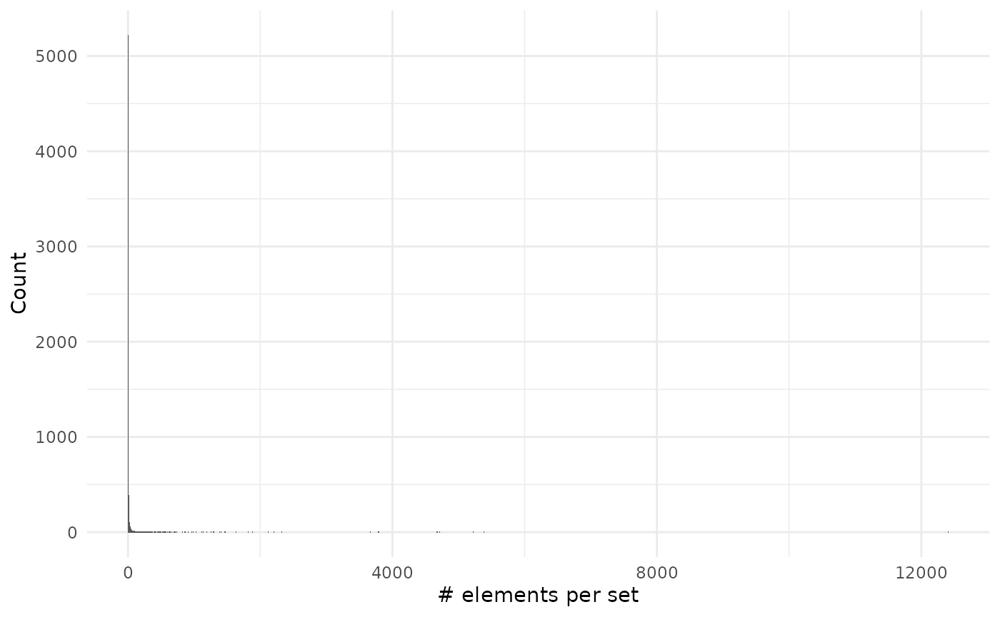
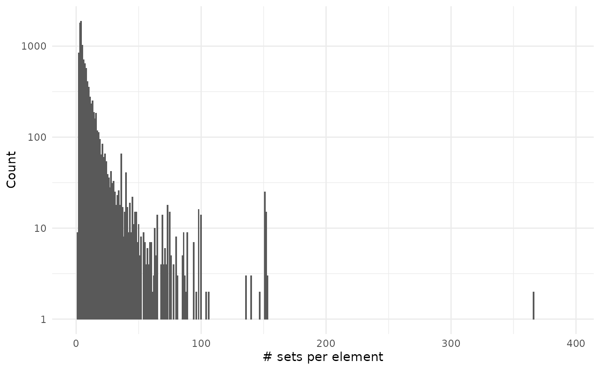
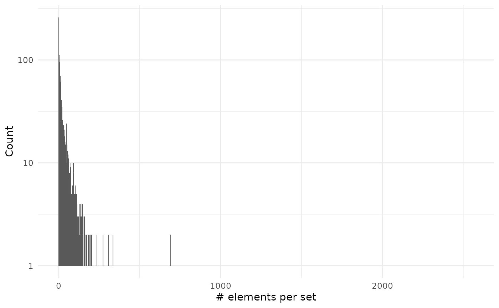

Advanced examples
Lluís Revilla
August Pi i Sunyer Biomedical Research Institute (IDIBAPS); Liver Unit, Hospital Cliniclluis.revilla@gmail.com
2021 Jul 15
Source:vignettes/advanced.Rmd
advanced.RmdAbstract
This vignette assumes you are familiar with set operations from the basic vignette.Initial setup
To show compatibility with tidy workflows we will use magrittr pipe operator and the dplyr verbs.
Human gene ontology
We will explore the genes with assigned gene ontology terms. These terms describe what is the process and role of the genes. The links are annotated with different evidence codes to indicate how such annotation is supported.
# We load some libraries
library("org.Hs.eg.db")
library("GO.db")
library("ggplot2")
# Prepare the data
h2GO_TS <- tidySet(org.Hs.egGO)
h2GO <- as.data.frame(org.Hs.egGO)We can now explore if there are differences in evidence usage for each ontology in gene ontology:
library("forcats")
h2GO %>%
group_by(Evidence, Ontology) %>%
count(name = "Freq") %>%
ungroup() %>%
mutate(Evidence = fct_reorder2(Evidence, Ontology, -Freq),
Ontology = case_when(Ontology == "CC" ~ "Cellular Component",
Ontology == "MF" ~ "Molecular Function",
Ontology == "BP" ~ "Biological Process",
TRUE ~ NA_character_)) %>%
ggplot() +
geom_col(aes(Evidence, Freq)) +
facet_grid(~Ontology) +
theme_minimal() +
coord_flip() +
labs(x = element_blank(), y = element_blank(),
title = "Evidence codes for each ontology")
We can see that biological process are more likely to be defined by IMP evidence code that means inferred from mutant phenotype. While inferred from physical interaction (IPI) is almost exclusively used to assign molecular functions.
This graph doesn’t consider that some relationships are better annotated than other:
h2GO_TS %>%
relations() %>%
group_by(elements, sets) %>%
count(sort = TRUE, name = "Annotations") %>%
ungroup() %>%
count(Annotations, sort = TRUE) %>%
ggplot() +
geom_col(aes(Annotations, n)) +
theme_minimal() +
labs(x = "Evidence codes", y = "Annotations",
title = "Evidence codes for each annotation",
subtitle = "in human") +
scale_x_continuous(breaks = 1:7)
We can see that mostly all the annotations are done with a single evidence code. So far we have explored the code that it is related to a gene but how many genes don’t have any annotation?
# Add all the genes and GO terms
h2GO_TS <- add_elements(h2GO_TS, keys(org.Hs.eg.db)) %>%
add_sets(grep("^GO:", keys(GO.db), value = TRUE))
sizes_element <- element_size(h2GO_TS) %>%
arrange(desc(size))
sum(sizes_element$size == 0)
#> [1] 41381
sum(sizes_element$size != 0)
#> [1] 20672
sizes_set <- set_size(h2GO_TS) %>%
arrange(desc(size))
sum(sizes_set$size == 0)
#> [1] 25694
sum(sizes_set$size != 0)
#> [1] 18391So we can see that both there are more genes without annotation and more gene ontology terms without a (direct) gene annotated.
sizes_element %>%
filter(size != 0) %>%
ggplot() +
geom_histogram(aes(size), binwidth = 1) +
theme_minimal() +
labs(x = "# sets per element", y = "Count")
sizes_set %>%
filter(size != 0) %>%
ggplot() +
geom_histogram(aes(size), binwidth = 1) +
theme_minimal() +
labs(x = "# elements per set", y = "Count")
As you can see on the second plot we have very large values but that are on associated on many genes:
head(sizes_set, 10)
#> sets size probability Ontology
#> 1 GO:0005515 12411 1 MF
#> 2 GO:0005634 5381 1 CC
#> 3 GO:0005829 5221 1 CC
#> 4 GO:0005737 4715 1 CC
#> 5 GO:0005886 4676 1 CC
#> 6 GO:0005654 3791 1 CC
#> 7 GO:0016021 3666 1 CC
#> 8 GO:0046872 2327 1 MF
#> 9 GO:0070062 2212 1 CC
#> 10 GO:0016020 2122 1 CCUsing fuzzy values
This could radically change if we used fuzzy values. We could assign a fuzzy value to each evidence code given the lowest fuzzy value for the IEA (Inferred from Electronic Annotation) evidence. The highest values would be for evidence codes coming from experiments or alike.
nr <- h2GO_TS %>%
relations() %>%
dplyr::select(sets, Evidence) %>%
distinct() %>%
mutate(fuzzy = case_when(
Evidence == "EXP" ~ 0.9,
Evidence == "IDA" ~ 0.8,
Evidence == "IPI" ~ 0.8,
Evidence == "IMP" ~ 0.75,
Evidence == "IGI" ~ 0.7,
Evidence == "IEP" ~ 0.65,
Evidence == "HEP" ~ 0.6,
Evidence == "HDA" ~ 0.6,
Evidence == "HMP" ~ 0.5,
Evidence == "IBA" ~ 0.45,
Evidence == "ISS" ~ 0.4,
Evidence == "ISO" ~ 0.32,
Evidence == "ISA" ~ 0.32,
Evidence == "ISM" ~ 0.3,
Evidence == "RCA" ~ 0.2,
Evidence == "TAS" ~ 0.15,
Evidence == "NAS" ~ 0.1,
Evidence == "IC" ~ 0.02,
Evidence == "ND" ~ 0.02,
Evidence == "IEA" ~ 0.01,
TRUE ~ 0.01)) %>%
dplyr::select(sets = "sets", elements = "Evidence", fuzzy = fuzzy)We have several evidence codes for the same ontology, this would result on different fuzzy values for each relation. Instead, we extract this and add them as new sets and elements and add an extra column to classify what are those elements:
ts <- h2GO_TS %>%
relations() %>%
dplyr::select(-Evidence) %>%
rbind(nr) %>%
tidySet() %>%
mutate_element(Type = ifelse(grepl("^[0-9]+$", elements), "gene", "evidence"))Now we can see which gene ontologies are more supported by the evidence:
ts %>%
dplyr::filter(Type != "Gene") %>%
cardinality() %>%
arrange(desc(cardinality)) %>%
head()
#> sets cardinality
#> 1 GO:0005515 12413.16
#> 2 GO:0005634 5386.10
#> 3 GO:0005829 5225.78
#> 4 GO:0005737 4720.10
#> 5 GO:0005886 4680.78
#> 6 GO:0005654 3794.26Surprisingly the most supported terms are protein binding, nucleus and cytosol. I would expect them to be the top three terms for cellular component, biological function and molecular function.
Calculating set sizes would be interesting but it requires computing a big number of combinations that make it last long and require many memory available.
ts %>%
filter(sets %in% c("GO:0008152", "GO:0003674", "GO:0005575"),
Type != "gene") %>%
set_size()
#> sets size probability
#> 1 GO:0003674 0 0.98
#> 2 GO:0003674 1 0.02
#> 3 GO:0005575 0 0.98
#> 4 GO:0005575 1 0.02
#> 5 GO:0008152 0 0.99
#> 6 GO:0008152 1 0.01Unexpectedly there is few evidence for the main terms:
ts %>%
filter(sets %in% c("GO:0008152", "GO:0003674", "GO:0005575")) %>%
filter(Type != "gene")
#> elements sets fuzzy Type
#> 1 IEA GO:0008152 0.01 evidence
#> 2 ND GO:0005575 0.02 evidence
#> 3 ND GO:0003674 0.02 evidenceIn fact those terms are arbitrarily decided or inferred from electronic analysis.
Human pathways
Now we will repeat the same analysis with pathways:
# We load some libraries
library("reactome.db")
# Prepare the data (is easier, there isn't any ontoogy or evidence column)
h2p <- as.data.frame(reactomeEXTID2PATHID)
colnames(h2p) <- c("sets", "elements")
# Filter only for human pathways
h2p <- h2p[grepl("^R-HSA-", h2p$sets), ]
# There are duplicate relations with different evidence codes!!:
summary(duplicated(h2p[, c("elements", "sets")]))
#> Mode FALSE TRUE
#> logical 121536 13375
h2p <- unique(h2p)
# Create a tidySet and
h2p_TS <- tidySet(h2p) %>%
# Add all the genes
add_elements(keys(org.Hs.eg.db))Now that we have everything ready we can start measuring some things…
sizes_element <- element_size(h2p_TS) %>%
arrange(desc(size))
sum(sizes_element$size == 0)
#> [1] 51197
sum(sizes_element$size != 0)
#> [1] 11135
sizes_set <- set_size(h2p_TS) %>%
arrange(desc(size))We can see there are more genes without pathways than genes with pathways.
sizes_element %>%
filter(size != 0) %>%
ggplot() +
geom_histogram(aes(size), binwidth = 1) +
scale_y_log10() +
theme_minimal() +
labs(x = "# sets per element", y = "Count")
#> Warning: Transformation introduced infinite values in continuous y-axis
#> Warning: Removed 274 rows containing missing values (geom_bar).
sizes_set %>%
ggplot() +
geom_histogram(aes(size), binwidth = 1) +
scale_y_log10() +
theme_minimal() +
labs(x = "# elements per set", y = "Count")
#> Warning: Transformation introduced infinite values in continuous y-axis
#> Warning: Removed 2304 rows containing missing values (geom_bar).
As you can see on the second plot we have very large values but that are on associated on many genes:
head(sizes_set, 10)
#> sets size probability
#> 1 R-HSA-162582 2560 1
#> 2 R-HSA-1430728 2119 1
#> 3 R-HSA-392499 2036 1
#> 4 R-HSA-168256 2022 1
#> 5 R-HSA-1643685 1877 1
#> 6 R-HSA-74160 1506 1
#> 7 R-HSA-597592 1434 1
#> 8 R-HSA-73857 1364 1
#> 9 R-HSA-212436 1241 1
#> 10 R-HSA-5663205 1131 1Session info
#> R version 4.1.0 (2021-05-18)
#> Platform: x86_64-pc-linux-gnu (64-bit)
#> Running under: Ubuntu 20.04.2 LTS
#>
#> Matrix products: default
#> BLAS: /usr/lib/x86_64-linux-gnu/openblas-pthread/libblas.so.3
#> LAPACK: /usr/lib/x86_64-linux-gnu/openblas-pthread/liblapack.so.3
#>
#> locale:
#> [1] LC_CTYPE=en_US.UTF-8 LC_NUMERIC=C
#> [3] LC_TIME=en_US.UTF-8 LC_COLLATE=en_US.UTF-8
#> [5] LC_MONETARY=en_US.UTF-8 LC_MESSAGES=en_US.UTF-8
#> [7] LC_PAPER=en_US.UTF-8 LC_NAME=C
#> [9] LC_ADDRESS=C LC_TELEPHONE=C
#> [11] LC_MEASUREMENT=en_US.UTF-8 LC_IDENTIFICATION=C
#>
#> attached base packages:
#> [1] parallel stats4 stats graphics grDevices utils datasets
#> [8] methods base
#>
#> other attached packages:
#> [1] reactome.db_1.76.0 forcats_0.5.1 ggplot2_3.3.5
#> [4] GO.db_3.13.0 org.Hs.eg.db_3.13.0 AnnotationDbi_1.54.1
#> [7] IRanges_2.26.0 S4Vectors_0.30.0 Biobase_2.52.0
#> [10] BiocGenerics_0.38.0 dplyr_1.0.7 BaseSet_0.0.17.9000
#>
#> loaded via a namespace (and not attached):
#> [1] Rcpp_1.0.7 png_0.1-7 Biostrings_2.60.1
#> [4] rprojroot_2.0.2 digest_0.6.27 utf8_1.2.1
#> [7] R6_2.5.0 GenomeInfoDb_1.28.1 RSQLite_2.2.7
#> [10] evaluate_0.14 highr_0.9 httr_1.4.2
#> [13] pillar_1.6.1 zlibbioc_1.38.0 rlang_0.4.11
#> [16] annotate_1.70.0 blob_1.2.1 rmarkdown_2.9
#> [19] pkgdown_1.6.1 labeling_0.4.2 textshaping_0.3.4
#> [22] desc_1.3.0 stringr_1.4.0 munsell_0.5.0
#> [25] RCurl_1.98-1.3 bit_4.0.4 compiler_4.1.0
#> [28] xfun_0.24 pkgconfig_2.0.3 systemfonts_1.0.2
#> [31] htmltools_0.5.1.1 tidyselect_1.1.1 KEGGREST_1.32.0
#> [34] tibble_3.1.2 GenomeInfoDbData_1.2.6 XML_3.99-0.6
#> [37] fansi_0.5.0 withr_2.4.2 crayon_1.4.1
#> [40] bitops_1.0-7 grid_4.1.0 gtable_0.3.0
#> [43] xtable_1.8-4 GSEABase_1.54.0 lifecycle_1.0.0
#> [46] DBI_1.1.1 magrittr_2.0.1 scales_1.1.1
#> [49] graph_1.70.0 stringi_1.6.2 cachem_1.0.5
#> [52] farver_2.1.0 XVector_0.32.0 fs_1.5.0
#> [55] ellipsis_0.3.2 ragg_1.1.2 vctrs_0.3.8
#> [58] generics_0.1.0 tools_4.1.0 bit64_4.0.5
#> [61] glue_1.4.2 purrr_0.3.4 fastmap_1.1.0
#> [64] yaml_2.2.1 colorspace_2.0-2 memoise_2.0.0
#> [67] knitr_1.33